矯正歯科
当院症例
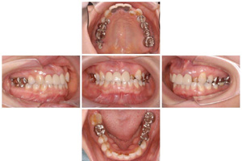 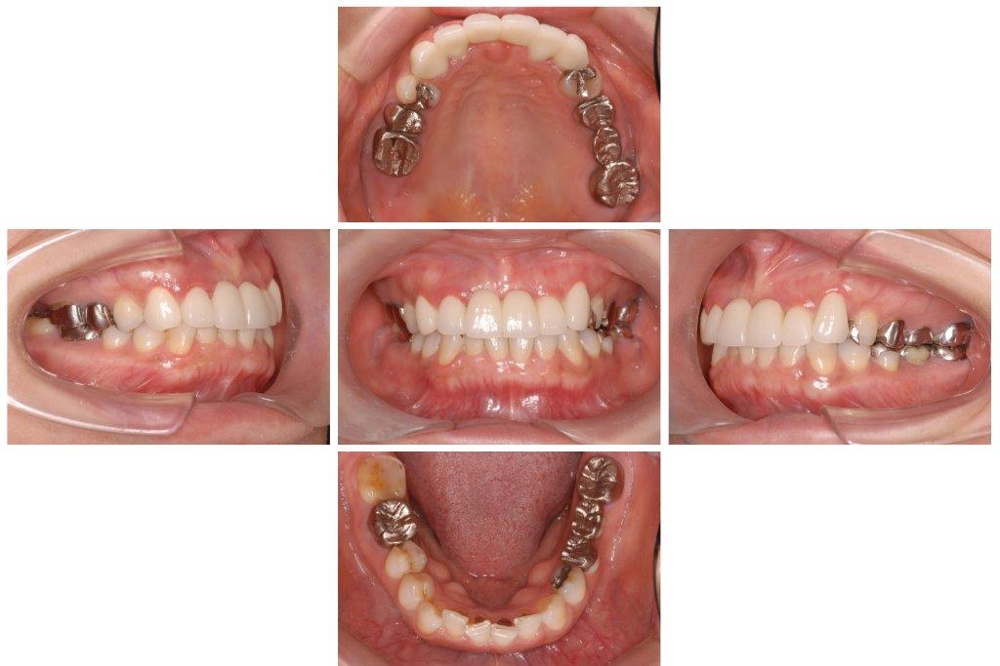
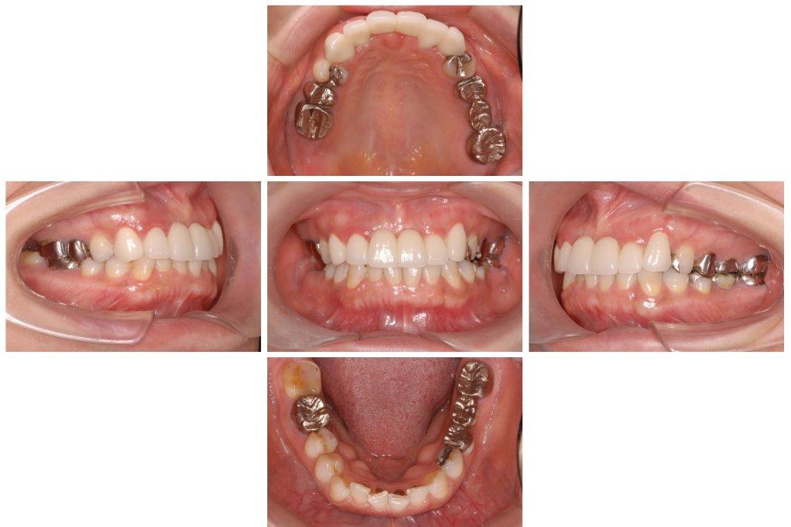
Ｌ１が折れてしまい、Ｌ２を移動でブリッジを作りました。
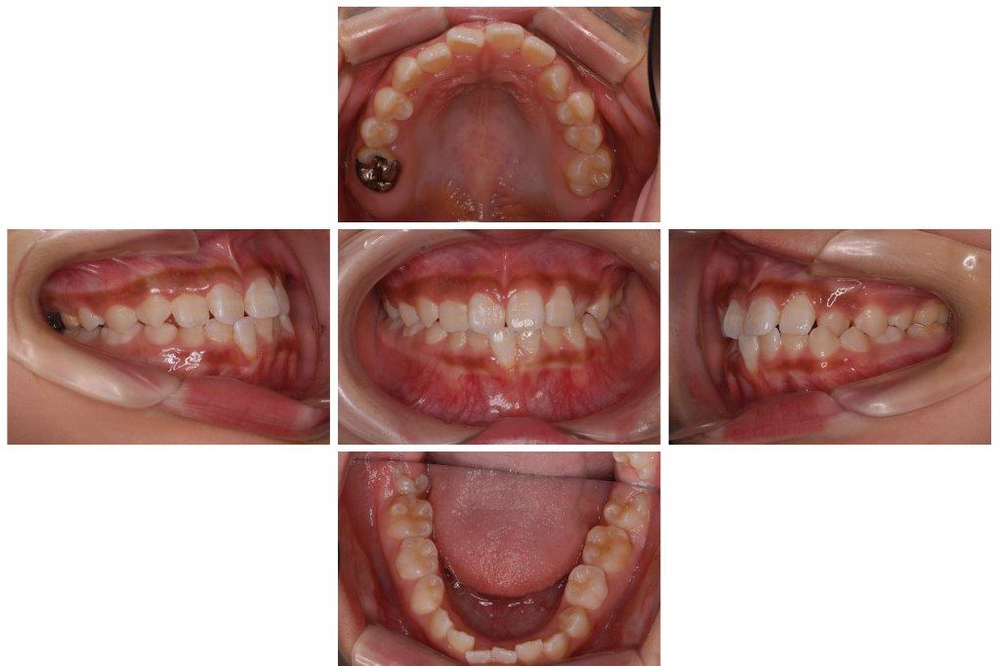
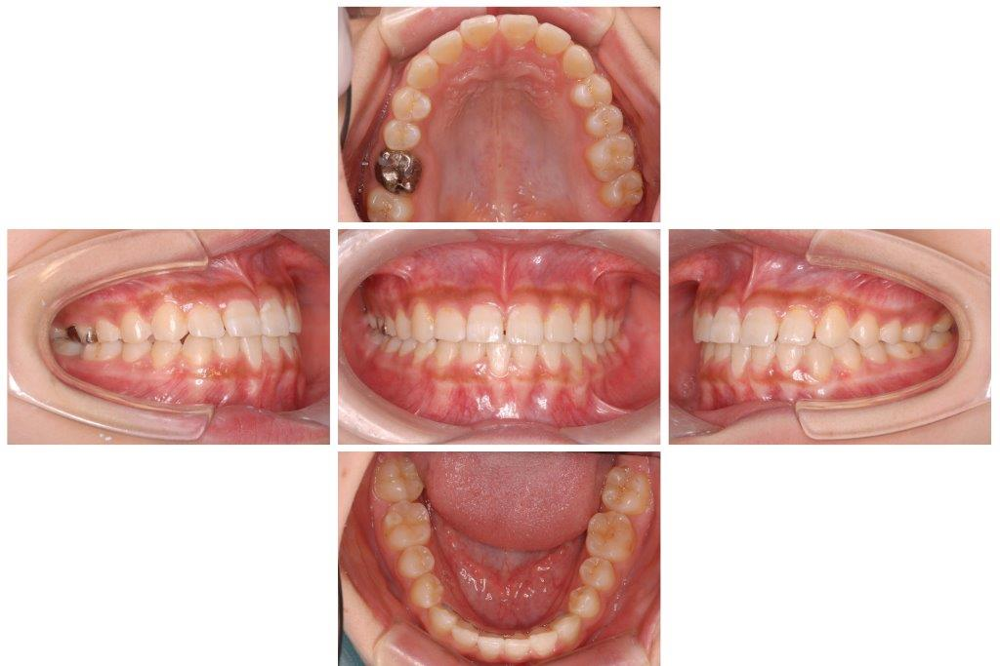
子供の一部反対咬合を矯正しました、放置すると顔がゆがんだり下顎が出たりします。
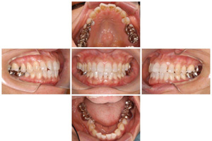
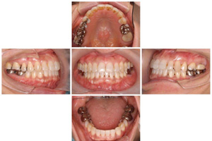
大人の歯並びの凸凹を矯正いたしました、きれいなアーチになりました。 健康に寄与します。
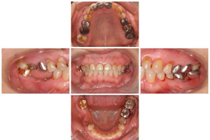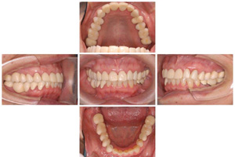
歯が溶けてかみ合わせが低くくなってしまった、かみ合わせを高くしてセラミックでかぶせる歯並びで歯ぐきもきれいになりました。
矯正の必要な歯並び（他の症例もご相談下さい）
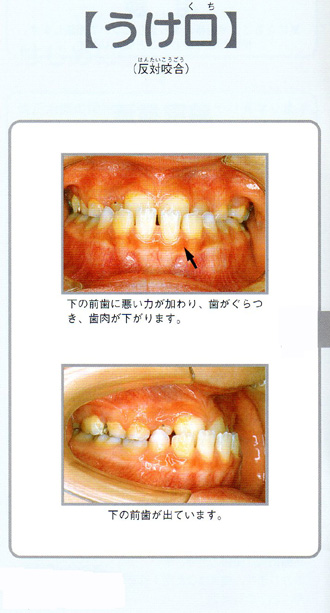＊何でもご相談下さい、状態や治療方法、費用など詳しくご説明致します。
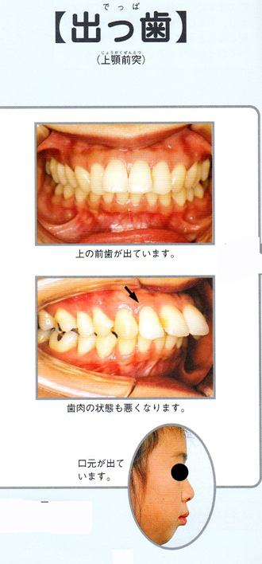
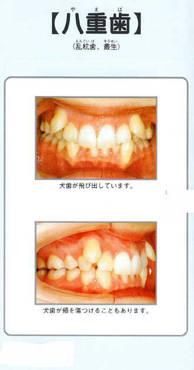